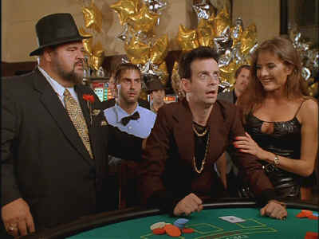

Sterling/1998/100m/FS 1.33
The central joke of The Godson is misfit son Guiseppe "Guppy" Calzone’s rise to power in his Mafia family. Kevin Hamilton McDonald is a good physical choice for Guppy and delivers his lines with wide-eyed enthusiasm. Dom Deluise plays The Oddfather, Guppy’s papa, as an extended impersonation of Marlon Brando in The Godfather, but it grows tiring and the comic material he must assay is tough going. Sitting with a goose on his lap instead of the cat Brando stroked as Don Corleone is The Godson’s idea of inspiration. Rodney Dangerfield plays the enchanting Rodfather, looking to take over the Calzone family, and Lou Ferrigno mumbles his way through bodyguard Bugsy. Ferrigno had better lines as The Incredible Hulk.
 |
The Oddfather guides Guppy through The Godson©Sterling |
The jejune script is aided and abetted by the
usual suspects. Garish costumes and sets milk the most out of this ridiculous cow and even
the music is totally derivative. Ironically, the production looks good, with bright,
upbeat photography leading the way.
The DVD is an explosion of color and excitement. Stunning color
supports vivid images. There are no visible compression or NTSC artifacts and the 1.33
aspect ratio seems native to the compositions. Dialogue is consistently clear on the Dolby
Digital 2-channel mix. The music and effects are recorded with excellent precision.
Overall, the surround sound achieves good ambiance and excellent dynamic
range.